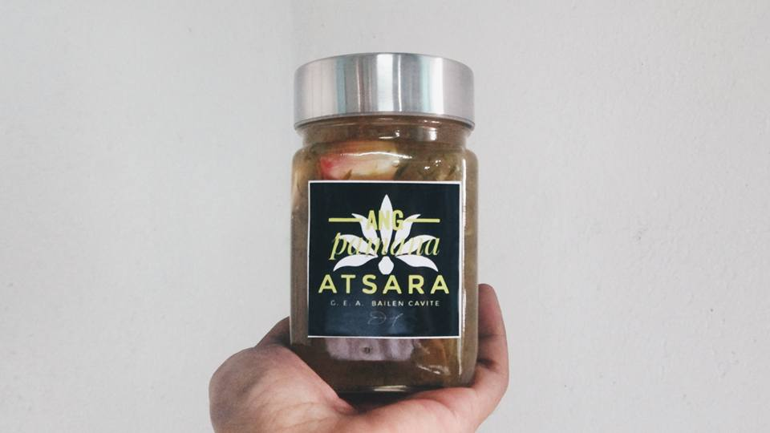
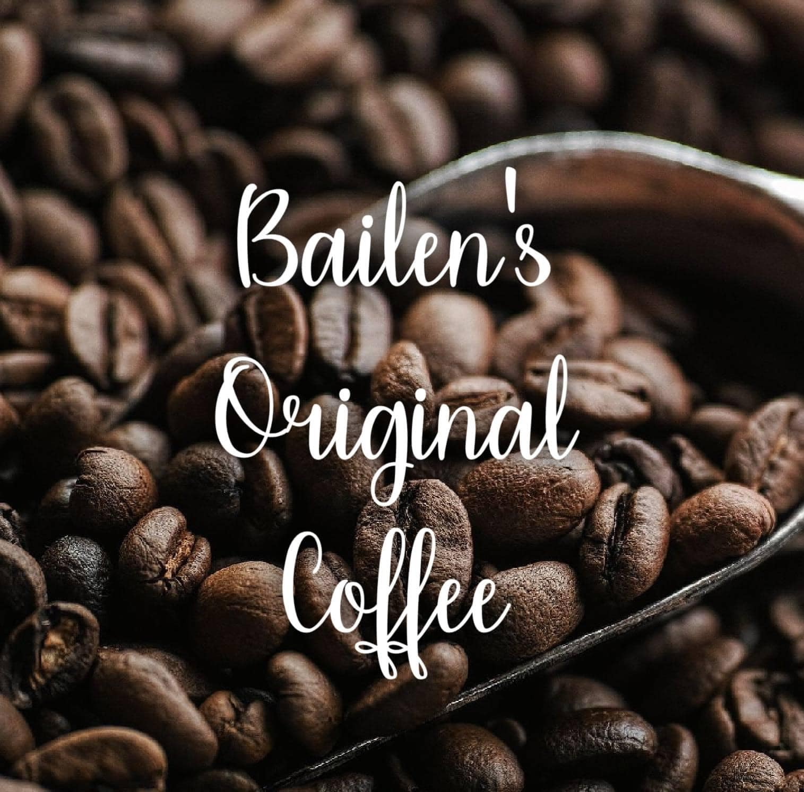
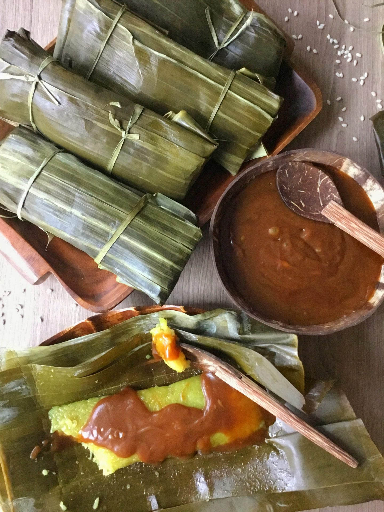

KNOWN FOOD AND CONDIMENTS
ATSARA
Indulge in the rich, tangy flavors of Atsara ng Bailen, a beloved local delicacy. Crafted with fresh, crisp papaya and a blend of secret spices, this pickled delight perfectly captures the essence of Bailen's culinary heritage. Whether enjoyed as a side dish or a snack, Atsara ng Bailen brings a touch of tradition to every meal.
KAPENG BARAKO
Experience the robust and full-bodied flavor of Kapeng Barako ng Bailen, a true gem of Cavite. This strong and aromatic coffee is grown in the fertile lands of Bailen, offering a rich and invigorating brew that delights the senses. Perfect for jumpstarting your day or savoring during a relaxing moment, Kapeng Barako ng Bailen is more than just coffee—it's a taste of home.
SUMAN
Savor the delicate and sweet flavors of Suman ng Bailen, a cherished Filipino treat. Made from glutinous rice wrapped in banana leaves and cooked to perfection, this traditional delicacy is a staple in Bailen's culinary culture. Whether enjoyed as a dessert or a snack, Suman ng Bailen brings a taste of local tradition and a touch of sweetness to any occasion.
PATIS
Discover the rich, savory taste of Patis ng Bailen, a signature fish sauce that enhances every dish it touches. Carefully fermented and crafted with traditional methods, this flavorful condiment embodies the authentic culinary heritage of Bailen. Perfect for marinades, dipping sauces, or seasoning, Patis ng Bailen adds a unique depth of flavor that elevates your cooking to new heights.